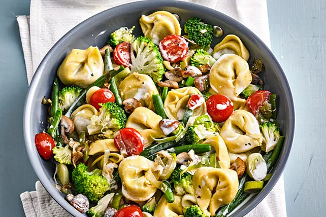

Vegetarische Tortellinipfanne
Zutaten
| 1 Pck. | Tortellini |
| 2 Handvoll | grüne Bohnen |
| 1/2 Kopf | brokkoliröschen |
| 1 | Porreestange |
| 200 g | geviertelte Champignons |
| 2 | gehackte Knoblauchzehen |
| Salt, Pfeffer und Chillipulver | |
| 1 gestr. EL | Gemüsebrühepulver |
| 200 ml | Pflanzensahne |
| 10 | halbierte Cocktailtomaten |
| Parmesan | |
| Speisestärke | |
| Butter |
Zubereitung
- Bringe einen großen Topf mit gesalzenem Wasser zum Kochen. Wasche die grünen Bohnen und schneide die Enden ab. Teile den Brokkoli in kleine Röschen. Wasche die Porreestange gründlich und schneide sie in feine Ringe. Viertle die Champignons. Hacke die Knoblauchzehen fein. Halbiere die Cocktailtomaten.
- Koche die Tortellini nach Packungsanweisung im kochenden Wasser. Gib die grünen Bohnen und Brokkoliröschen in das gleiche Wasser und koche sie zusammen mit den Tortellini, bis sie bissfest sind. Dies dauert etwa 3-4 Minuten. Gieße die Tortellini und das Gemüse ab und stelle sie beiseite.
- Erhitze einen großzügigen Esslöffel Butter in einer großen Pfanne bei mittlerer Hitze. Gib die Porreeringe in die Pfanne und brate sie etwa 3-4 Minuten an, bis sie weich sind. Füge die geviertelten Champignons und den gehackten Knoblauch hinzu. Brate alles weiter, bis das Gemüse weich und leicht gebräunt ist. Dies dauert etwa 5-7 Minuten.
- Würze das Gemüse in der Pfanne mit Salz, Pfeffer und einer Prise Chilippulver nach Geschmack. Streue das Gemüsebrühepulver über das Gemüse und rühre alles gut um.
- Gieße die Pflanzensahne in die Pfanne und rühre alles gut um, damit sich die Aromen verbinden. Wenn die Sauce zu dünn ist, rühre etwas Speisestärke in kaltem Wasser an und gib sie zur Sauce, um sie zu verdicken. Lass die Sauce kurz aufkochen, damit sie eindickt.
- Gib die gekochten Tortellini, die grünen Bohnen und die Brokkoliröschen in die Pfanne und vermische alles gründlich, sodass die Sauce die Tortellini und das Gemüse bedeckt.
- Füge die halbierten Cocktailtomaten hinzu und rühre sie vorsichtig unter, damit sie nicht zerfallen.
- Serviere die Tortellini-Gemüse-Pfanne auf Tellern und streue frisch geriebenen Parmesan darüber. Optional kannst du das Gericht mit frischen Kräutern garnieren.